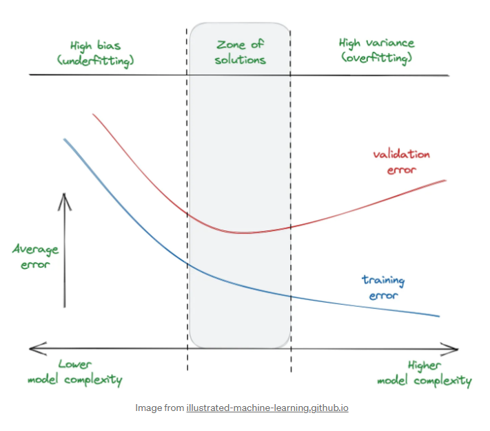

# https://gavinsimpson.github.io/gratia/reference/data_sim.html
pacman::p_load(data.table,tidyverse,caret,mgcv,ggtext,FactoMineR,factoextra,
pdp,ranger,glue,patchwork,glmnet,CalibrationCurves,DescTools)
urlfile="https://raw.githubusercontent.com/R2mu/GWS_DSPR/main/data/mod5.csv"
mod5_dat <- fread(urlfile)6 Module 5
6.1 Goals for this week.
Our current outline for the next out weeks looks like the below.
Introduction into R programming language and getting started with some descriptive statistics.
Understanding key terms; Exploratory analysis, Supervised vs Unsupervised problems, regression vs classification, prediction vs association.
A quick note on distributions - Supervised regression and classification problems using a generalized linear model framework. (Hypothesis testing)
Machine learning approach to Supervised learning
Methods of assessing model accuracy, feature selection and model tuning.
Unsupervised learning strategies2 (market basket analysis, network analysis)
Creating a machine learning pipeline
6.2 Recap from last module
In our last module, we explored commonly used machine learning algorithms, focusing on Decision Trees and Random Forests. We discussed how Decision Trees offer good interpretability but have limitations in performance. We then examined how Random Forests attempt to overcome these limitations, often achieving good out-of-the-bag performance with minimal tuning.
However, we encountered a crucial insight: even powerful algorithms like Random Forests can sometimes overfit the data. We demonstrated this by comparing the Random Forest to a Generalized Additive Model (GAM), using the technique of splitting our data into training and test sets. This approach allowed us to train models on one subset of data and evaluate their performance on unseen data, revealing potential overfitting issues.
This week, we’ll delve deeper into strategies for mitigating overfitting risks and assessing model performance. We’ll explore:
Cross-validation: We briefly mentioned this technique last week as a method to help prevent overfitting. We’ll now examine it in more detail, understanding how it provides a more robust evaluation of model performance.
Model Performance Metrics: We’ll cover common statistics used to assess model accuracy for both classification and regression problems. For binary classification (e.g., Goal/Miss), we’ll look at metrics such as accuracy, precision, recall, and F1-score. For regression problems with continuous outcomes, we’ll explore metrics like Root Mean Square Error (RMSE) and R-squared.
Bias-Variance relationship: Introduce the concept of the Bias variance relationship.
Time permitting, we’ll tie these concepts together by exploring penalized regression, an algorithm that inherently incorporates feature selection and model tuning. This will provide a practical example of how these elements work together in advanced machine learning techniques.
Learning Objectives: By the end of this module, you should be able to:
Understand and apply cross-validation techniques
Calculate and interpret common performance metrics for classification and regression models
Recognize the importance of feature selection and apply basic selection techniques
Understand the concept of model tuning and its role in improving model performance
Please note that assessing model performance is a vast area in statistics and machine learning. While we can’t cover all existing metrics and techniques, this module will equip you with a solid foundation in the most commonly used and practical approaches.
6.3 Load data and R packages
This data set represents Team Data by QUARTER. Have a think about what R functions you could use to start to feel comfortable with the data set.
## drop columns that obviously related to the outcome
mod5_dat<-mod5_dat[,!c("BEHIND","POINTS","GOAL","SHOT_AT_GOAL","HANDBALL_GAIN_METRES",
"SCORE_INVOLVEMENT","SCOREBOARD_IMPACT","SCORE_LAUNCH",
"INSIDE_50")
][, .SD, .SDcols = !patterns("PCNT")
][, .SD, .SDcols = !patterns("IN50")]
## drop columns with highly negatively skewed values
is0 = function(x)is.numeric(x) && quantile(x, 0.25,na.rm =T) == 0
m5_dat <-copy(mod5_dat)[, which(sapply(mod5_dat, is0)) := NULL]
##log transform to help normalize variables later on
m5_log <-copy(m5_dat)[, names(m5_dat)[8:94] := lapply(.SD, function(x) log(x + 1)), .SDcols = 8:94]
m5_scaled <- copy(m5_log)[, names(m5_log)[8:94] := lapply(.SD, scale), .SDcols = 8:94]Below are some links behind the idea of what we are going to do.
6.4 Data splitting
Given the size of most of your data sets you should feel relatively confident in always creating a training and a test data set. Once you have created these data sets, it is important you put you only end up using the test data set at the end, once you have completed fine tuning your models. There are many R packages that will do data splitting for you but it is quite easy to do using base R.
set.seed(123) # for reproducibility
split <- 0.7 ## proportion of rows for training data set
train <- sample(nrow(m5_scaled), split * nrow(m5_scaled)) # randomly sample 70% of row indices from data set.
test <- setdiff(1:nrow(m5_scaled), train)
# get remainder of 30% of rows not in training dataset.
train_data <- m5_scaled[train, ]# create training dataset
test_data <- m5_scaled[test, ]# create test datasetWe now have a data-set called train_data with 2066 rows and a data-set called test_data with 866 rows in it.
As I mentioned earlier, we will now effectively forget about the test data-set until later and just work with the training data-set.
6.5 Assessing continuous responses
For our first model we are going to assess a continuous outcome which is going to be quarter differential. The most common metrics used when assessing a models ability to describe a continuous outcome variable are
Mean Absolute Error (MAE) : This simply represents the
mean(abs((actual - predicted)))
Mean Squared Error (MSE) : Very similar to above but instead of taking the absolute of the difference between variables we are going to square the distance. This will penalize poor predictions more than the MAE
mean((actual - predicted)^2)
Root Mean Squared Error (RMSE) : Similar to above but we now just going to sqrt the MSE to get it back to the same level of the outcome measure.
sqrt(mean((actual - predicted)^2)) or sqrt(MSE)
R2: This represents the proportion of the variance in the dependent variable that is predictable from the independent variable(s). It ranges from 0 to 1, where 1 indicates perfect prediction.
1 - (sum((actual - predicted)^2) / sum((actual - mean(actual))^2))
Adjusted R Squared:This is a modified version of R-squared that adjusts for the number of predictors in the model. It increases only if the new term improves the model more than would be expected by chance.
1 - ((1 - R²) * (n - 1) / (n - p - 1))
where n is the number of observations and p is the number of predictors.
Notes:
R-squared can be interpreted as the percentage of variance explained by the model.
Adjusted R-squared is always lower than R-squared and can be negative.
While R-squared always increases when adding more variables to the model (even if they’re not meaningful), Adjusted R-squared penalizes the addition of variables that don’t improve the model’s explanatory power.
These metrics provide different perspectives on model performance. MAE and RMSE are in the same units as the outcome variable, making them easily interpretable. R-squared and Adjusted R-squared give a sense of the model’s overall explanatory power. The choice of which metric to prioritize often depends on the specific needs of your analysis and the characteristics of your data.
Now often you might calculate all of these on both the training data-set and test data-set, as it could give insight into possible over-fitting and also can give insight into the BIAS-VARIANCE trade off.
https://mlu-explain.github.io/bias-variance/
https://illustrated-machine-learning.github.io/#/machine-learning/bias-variance

I encourage you to have a read through the websites above. But effectively all variables have some noise component of noise to them, as we continually add more and more variables we are effectively adding some noise to the model as well. Initially, important variables will reduce error, but we may get to a stage where we are just adding noise with no improvements in model accuracy.
6.6 Simple Gaussian example
m5_small <- train_data[,.(Diff.Qtr.Points,CLEARANCE,CONTESTED_POSSESSION,CONTESTED_MARK,CRUMB,EFFECTIVE_DISPOSAL,INTERCEPT,HITOUT,KICK_GAIN_METRES,KICK,MARK,LOOSE_BALL_GET,TACKLE,REBOUND_50,METRES_GAINED_EFF,PLY_PRESS_PTS,
SPOIL,RATING,LONG_KICK,SHORT_KICK,FIRST_POSSESSION)]
m5_small_tst <- test_data[,.(Diff.Qtr.Points,CLEARANCE,CONTESTED_POSSESSION,CONTESTED_MARK,CRUMB,EFFECTIVE_DISPOSAL,INTERCEPT,HITOUT,KICK_GAIN_METRES,KICK,MARK,LOOSE_BALL_GET,TACKLE,REBOUND_50,METRES_GAINED_EFF,PLY_PRESS_PTS,
SPOIL,RATING,LONG_KICK,SHORT_KICK,FIRST_POSSESSION)]
set.seed(123)
# Set up repeated k-fold cross-validation
train.control <- trainControl(method = "cv", number = 10)
# Train the model
step.model <- train(Diff.Qtr.Points ~., data = m5_small,
method = "leapBackward",
tuneGrid = data.frame(nvmax = 1:18),
trControl = train.control
)
bwelim <- data.table(step.model$results)ggplot(bwelim,aes(nvmax,RMSE,ymin=RMSE-RMSESD,ymax=RMSE+RMSESD))+
geom_pointrange()+
theme_bw()
#plot(step.model)From eyeballing we can that from around 8 variables in performance doesn’t really seem to change much. Lets have a look at the coefs. Of quite note, these coefficients have been scaled on log transformed data so they don’t have direct interpretation for absolute values, but you can still look interpret them as absolute magnitude of number being indicative of importance. .
round(coef(step.model$finalModel, 8),2) (Intercept) EFFECTIVE_DISPOSAL KICK TACKLE
0.18 -2.14 4.45 4.11
REBOUND_50 METRES_GAINED_EFF PLY_PRESS_PTS SPOIL
-1.16 3.27 -5.11 -0.94
RATING
9.25 You may notice some weird directions for variables e.g. (“EFFECTIVE_DISPOSAL”,“PLY_PRESS_PTS”) , this likely due to the fact that some of the variables are highly correlated with each other, which can cause flipping of effects in simple regression problems. For example, see below. Whilst, the LM model has not really done anything wrong, its more a problem with us the user having to spend a lot of mental energy contextualizing what the effects actually mean. We will explore some other techniques latter (LASSO) that can help a little in situations where you might expect many variables to be highly correlated.
eg1 = ggplot(train_data,aes(TACKLE,PLY_PRESS_PTS))+geom_point()+stat_smooth(method = "lm")
eg2 = ggplot(train_data,aes(EFFECTIVE_DISPOSAL,METRES_GAINED_EFF))+geom_point()+stat_smooth(method = "lm")
eg0 <- ggplot(train_data,aes(PLY_PRESS_PTS,Diff.Qtr.Points))+geom_point()+stat_smooth(method = "lm")
ggpubr::ggarrange(eg0,eg1,eg2,nrow = 1)`geom_smooth()` using formula = 'y ~ x'
`geom_smooth()` using formula = 'y ~ x'
`geom_smooth()` using formula = 'y ~ x'Or it could there be another reason???
nvar =step.model$finalModel$nvmax-1
results_df <- data.frame(i = integer(), RMSE = numeric(),r2 = numeric(),adjr2 = numeric())
for (i in 1:nvar) {
ip1 <- i+1
form1<-as.formula(paste("Diff.Qtr.Points~",
paste(names(coef(step.model$finalModel,i)[2: ip1]),
collapse = "+")))
lmTest <- lm(form1,data = train_data)
rmse <-round(caret::RMSE(predict(lmTest,test_data),test_data$Diff.Qtr.Points),2)
results_df <- rbind(results_df, data.frame(i = i, RMSE = rmse,
r2 =summary(lmTest)$r.squared,
adjr2 = summary(lmTest)$adj.r.squared))
}g1=ggplot()+
geom_pointrange(bwelim[nvmax<=nvar,],mapping =aes(nvmax,RMSE,ymin=RMSE-RMSESD,ymax=RMSE+RMSESD),
col="gray")+
geom_point(results_df,mapping=aes(i,RMSE),col="red")+
geom_path(results_df,mapping=aes(i,RMSE),col="red")+
theme_bw()
g2 = ggplot(results_df,aes(i,r2))+geom_path()+
geom_path(aes(i,adjr2),col="red")+
theme_bw()
ggpubr::ggarrange(g1,g2)Key points above.
1) Test performance still worse than cross-validated performance, but still follow a relatively similar shape, which is good to see and could be argued test performance is technically within CV performance range.
2) A little harder to see but adjusted r2 (in red) gets lower as we add more values when compared to just the r2 value.
6.6.1 Quick note of CV
Within the code above, the model was tuned using cross validation. There are endless packages in R that will performance k-fold cross validation for you but below is just a quick overview of what is happening behind the scenes.
nfolds = 5
2066/nfolds ## data put aside for internal validation[1] 413.2round(2066-(2066/nfolds),0) ## data put aside for internal training[1] 1653folds <- createFolds(train_data$QtrWL,k = nfolds)
sapply(folds, length)Fold1 Fold2 Fold3 Fold4 Fold5
413 413 414 413 413 6.7 Assessing Binomial/logistic models
We will now explore how we go about assessing binary responses, e.g., yes vs. no, goal vs. miss. While some of the steps and statistics will be quite similar to those used for continuous outcomes, assessing binomial outcomes is usually more extensive. There are good reasons for this complexity:
Decision-making: Many real-world situations, particularly in medicine, require individuals to make dichotomous decisions based on probabilistic information.
Risk thresholds: Different individuals or contexts may have different thresholds for what constitutes an acceptable level of risk.
Competing risks: In many scenarios, the decision to act or not act comes with its own set of risks and benefits that need to be weighed against each other.
Probability interpretation: Understanding and accurately interpreting probabilities can be challenging for many people.
As a result, statisticians and researchers have proposed many different metrics that aim to provide various perspectives on model performance. These metrics help contextualize the results, aiding people in ultimately making decisions based on what is fundamentally a probability output.
Some key metrics we’ll explore include:
Accuracy: The overall correct classification rate.
Sensitivity (Recall): The true positive rate; Proportion of actual positives correctly identified. Usually care about this when the cost of a false negative is high.
Specificity: The true negative rate; Proportion of negatives correctly identified.
Precision: The positive predictive value; Proportion of positive identification were actually correct. Usually care about this when the cost of a false positive is high.
F1 Score: The harmonic mean of precision and recall.
ROC curve and AUC/ C statistic: A graphical plot that illustrates the diagnostic ability of a binary classifier system as its discrimination threshold is varied.
Confusion Matrix: A table layout of correct and incorrect classifications.
Brier Score: A measure of the mean squared difference between the predicted probability and the actual outcome. Lower scores indicate better calibration of probability estimates.
Calibration statistics: Measures how well the predicted probabilities of a model match the observed frequencies. This can include calibration plots, and other metrics that assess the reliability of probability estimates.
Each of these metrics provides a different insight into model performance, and the choice of which to prioritize often depends on the specific context of the problem at hand. (There are other common statistics that are also suggested that aren’t mentioned above)
https://illustrated-machine-learning.github.io/#/machine-learning/metrics

6.8 Binomial example
Below we will use a penalized regression model to predict Wins vs Losses over a quarter. Penalized regression can be thought of as similar to a linear model, but with a penalty applied to the size of the coefficients. There are various ways this penalty can be applied, but here we’ll explore the L1 penalty, also known as LASSO (Least Absolute Shrinkage and Selection Operator) regression.
The LASSO penalty penalizes the absolute sum of all the coefficients. It has the added benefit of potentially shrinking parameters that don’t contribute significantly to model performance to exactly zero, which can aid in feature selection.
Mathematically, the LASSO objective function looks like this:
LASSO Objective = (Sum of Squared Errors) + λ * (Sum of |β|)
Where:
- “Sum of Squared Errors” is the standard objective of ordinary least squares regression
- λ (lambda) is the tuning parameter that controls the strength of the penalty
- “Sum of |β|” is the sum of the absolute values of the coefficients
The first term in the equation is the usual sum of squared residuals that we seek to minimize in ordinary least squares regression. The second term, is the LASSO penalty.
Key points:
When λ = 0, the penalty term has no effect, and we get the same estimates as ordinary least squares.
As λ increases, the penalty becomes stronger, and more coefficients are shrunk towards zero.
Some coefficients may be shrunk exactly to zero, effectively removing those predictors from the model.
The λ parameter is typically chosen through cross-validation to find the value that minimizes prediction error.
LASSO is particularly useful when dealing with many predictors, especially when some may be correlated, as it performs both regularization (to prevent overfitting) and feature selection simultaneously.
In the literature, the LASSO (and other variants of penalized regression) tend to perform quite well in a range of scenarios, even when compared to more advanced technique.
m5binom<- m5_small[, QWL:=as.factor(ifelse(Diff.Qtr.Points>0,1,0))
]#[,Diff.Qtr.Points:=NULL]
m5binom_Tst<- m5_small_tst[, QWL:=as.factor(ifelse(Diff.Qtr.Points>0,1,0))
]#
x <- as.matrix(m5binom[,2:21])
x_tst <- as.matrix(m5binom_Tst[,2:21])
y <- m5binom$QWL
y_tst <- m5binom_Tst$QWL
fit1 <- cv.glmnet(x,y,family = "binomial",
nfolds = 10,
type.measure = "auc",
alpha =1,
keep = T,
scale =F,intercept =F)
plot(fit1)fin_fint <- glmnet(x,y,family = "binomial",
lambda =fit1$lambda.1se,
alpha =1,
type.measure = "auc",
scale =F,intercept = F)
coef(fit1, s = "lambda.1se")21 x 1 sparse Matrix of class "dgCMatrix"
s1
(Intercept) .
CLEARANCE .
CONTESTED_POSSESSION .
CONTESTED_MARK 0.024550364
CRUMB .
EFFECTIVE_DISPOSAL .
INTERCEPT .
HITOUT .
KICK_GAIN_METRES 0.320804869
KICK 0.346023235
MARK 0.007240451
LOOSE_BALL_GET -0.032812210
TACKLE 0.265107376
REBOUND_50 -0.117526801
METRES_GAINED_EFF 0.199013932
PLY_PRESS_PTS -0.421942735
SPOIL -0.066702894
RATING 1.314397272
LONG_KICK .
SHORT_KICK .
FIRST_POSSESSION . assess.glmnet(fin_fint, newx = x_tst, newy = y_tst,family = "binomial")$deviance
s0
0.8440399
attr(,"measure")
[1] "Binomial Deviance"
$class
s0
0.2042889
attr(,"measure")
[1] "Misclassification Error"
$auc
[1] 0.8921874
attr(,"measure")
[1] "AUC"
$mse
s0
0.2722072
attr(,"measure")
[1] "Mean-Squared Error"
$mae
s0
0.5887983
attr(,"measure")
[1] "Mean Absolute Error"rocs <- roc.glmnet(fit1$fit.preval, newy = y)
best <-fit1$index["1se",]
plot(rocs[[best]], type = "l")
invisible(sapply(rocs, lines, col="grey"))
lines(rocs[[best]], lwd = 2,col = "red")
abline(a=0,b=1,lwd=1)To understand the AUC measure of 0.89 it effectively means that if we randomly selected a goal or a miss there is a 0.89% chance that the model would give a higher probability of goal to the goal case. So in a manner this number represents how well our model does at discriminating between cases.
The AUC of the ROC curve is a useful statistic for evaluating model performance. However, in situations with high class imbalance, such as injury prediction where injuries are rare events, it can suggest overly optimistic model performance. This is particularly problematic because most injury models have relatively poor sensitivity (ability to correctly identify actual injuries). The AUC ROC might still appear high due to the model’s ability to correctly classify the numerous non-injury cases, even when its performance in detecting the rare injury cases is limited. This can lead to an overly optimistic interpretation of the model’s practical utility in identifying injuries. For cases like this, a precision-recall graph (which has a higher focus on the minority class) can be useful along with analyzing F1 scores, balanced Accuracy and Cohens Kappa).
We will use a helpful function from the Caret package which has many of these additional statistics. https://rdrr.io/cran/caret/man/confusionMatrix.html,
Whilst, this is very helpful, be sure to read the documentation as it defaults to the first class being the positive class e.g. 0 being considered Goal where we obviously want the opposite. (This confused me for like 2 days for a study I did a while a go)
confusionMatrix(y_tst,
as.factor(predict(fin_fint,newx = x_tst,type = "class")),
positive = "1",
mode = "everything")Confusion Matrix and Statistics
Reference
Prediction 0 1
0 333 109
1 72 372
Accuracy : 0.7957
95% CI : (0.7676, 0.8218)
No Information Rate : 0.5429
P-Value [Acc > NIR] : < 2.2e-16
Kappa : 0.5913
Mcnemar's Test P-Value : 0.007454
Sensitivity : 0.7734
Specificity : 0.8222
Pos Pred Value : 0.8378
Neg Pred Value : 0.7534
Precision : 0.8378
Recall : 0.7734
F1 : 0.8043
Prevalence : 0.5429
Detection Rate : 0.4199
Detection Prevalence : 0.5011
Balanced Accuracy : 0.7978
'Positive' Class : 1
Brier Score
BrierScore(predict(fin_fint,newx = x_tst,type = "response"),as.numeric(y_tst)-1)[1] 0.2943991Calibration Curve
calPerf = val.prob.ci.2(predict(fin_fint,newx = x_tst,type = "response"), as.numeric(y_tst)-1)6.9 Feature selection - L1
m5binom<- m5_small[, QWL:=as.factor(ifelse(Diff.Qtr.Points>0,1,0))
]#[,Diff.Qtr.Points:=NULL]
m5binom_Tst<- m5_small_tst[, QWL:=as.factor(ifelse(Diff.Qtr.Points>0,1,0))
]#
x <- as.matrix(m5binom[,2:21])
x_tst <- as.matrix(m5binom_Tst[,2:21])
y <- m5binom$Diff.Qtr.Points
y_tst <- m5binom_Tst$Diff.Qtr.Points
fit2 <- cv.glmnet(x,y,
#family = "binomial",
nfolds = 10,
type.measure = "mae",
alpha =1,
keep = T,
scale =F,intercept =F)
plot(fit2)#fin_fint <- glmnet(x,y,family = "binomial",
# lambda =fit1$lambda.1se,
# alpha =1,
# type.measure = "auc",
# scale =F,intercept = F)coef(fit2, s = "lambda.1se")21 x 1 sparse Matrix of class "dgCMatrix"
s1
(Intercept) .
CLEARANCE .
CONTESTED_POSSESSION .
CONTESTED_MARK 0.12882920
CRUMB .
EFFECTIVE_DISPOSAL .
INTERCEPT .
HITOUT .
KICK_GAIN_METRES 1.96561681
KICK 2.51050179
MARK .
LOOSE_BALL_GET -0.13742292
TACKLE 2.94222473
REBOUND_50 -1.06358316
METRES_GAINED_EFF 1.82694544
PLY_PRESS_PTS -3.76403791
SPOIL -0.67890923
RATING 8.27345169
LONG_KICK .
SHORT_KICK 0.02990906
FIRST_POSSESSION . When attempting to utilise feature selection algorithms, I usually suggest penalization methods such as LASSO (Least Absolute Shrinkage and Selection Operator). These techniques offer several advantages over alternative methods, particularly in handling multicollinearity and producing sparse, interpretable models. However, it’s important to acknowledge that penalization approaches are not without limitations.
One key consideration is that penalized models may yield coefficient estimates that differ from what we might expect based on univariate analyses. This divergence highlights the complex, multidimensional nature of relationships within our data and underscores the importance of a comprehensive approach to feature selection.
To enhance model interpretability and stability, it’s crucial to identify and potentially remove redundant variables or those that are nearly perfectly explained by a combination of other variables. Such variables can introduce confounding effects and obscure the interpretability of our model. This process often requires a balance between statistical techniques and domain expertise.
To address these challenges, we’ll explore unsupervised learning approaches to identify variables that are highly related in multidimensional space. Techniques such as Principal Component Analysis (PCA), t-SNE (t-Distributed Stochastic Neighbor Embedding), or UMAP (Uniform Manifold Approximation and Projection) can reveal non-obvious relationships between variables that might not be apparent from simple correlation matrices.
The data preprocessing steps we took earlier, including log transformation and scaling, are particularly relevant for these unsupervised methods. By transforming variables from different distributions to a roughly consistent log-normal distribution, we create a more suitable input for many unsupervised algorithms, which often assume normally distributed data.
It’s important to note that feature selection is typically an iterative process. We may cycle between penalization methods, unsupervised techniques, and domain knowledge-based selection to refine our feature set. Throughout this process, we’ll need to balance model complexity (number of features) with performance, considering the bias-variance tradeoff
6.10 Feature selection - Alternate methods
Probably one of the most commonly used algorithms for reducing the amount of variables is principle component analysis (PCA). I won;t get into too much detail into the algorithm as there are many resources available online that do a great job at explaining what PCA is trying to achieve.
data.pca <- princomp(x)
factoextra::fviz_eig(data.pca, addlabels = TRUE)round(data.pca$loadings[, 1:4],3) Comp.1 Comp.2 Comp.3 Comp.4
CLEARANCE 0.064 0.331 0.415 0.097
CONTESTED_POSSESSION 0.224 0.364 0.003 0.175
CONTESTED_MARK 0.133 -0.067 0.047 0.097
CRUMB 0.150 0.151 -0.279 0.276
EFFECTIVE_DISPOSAL 0.352 -0.130 0.094 -0.082
INTERCEPT 0.206 0.097 -0.385 -0.023
HITOUT -0.045 0.221 0.237 -0.186
KICK_GAIN_METRES 0.380 0.072 -0.077 0.021
KICK 0.381 -0.118 0.048 -0.119
MARK 0.239 -0.357 0.112 -0.173
LOOSE_BALL_GET 0.166 0.309 -0.169 0.202
TACKLE -0.032 0.280 0.024 -0.575
REBOUND_50 -0.038 -0.011 -0.386 -0.146
METRES_GAINED_EFF 0.348 -0.028 -0.040 -0.077
PLY_PRESS_PTS -0.055 0.257 -0.144 -0.594
SPOIL 0.016 0.176 -0.295 -0.005
RATING 0.345 0.132 0.134 -0.029
LONG_KICK 0.221 0.120 -0.120 -0.028
SHORT_KICK 0.259 -0.317 0.162 -0.172
FIRST_POSSESSION 0.031 0.324 0.408 0.076factoextra::fviz_pca_var(data.pca, col.var = "black")factoextra::fviz_cos2(data.pca, choice = "var", axes = 1)factoextra::fviz_pca_var(data.pca, col.var = "cos2",
gradient.cols = c("black", "orange", "green"),
repel = TRUE)6.10.0.1 Sparce PCA
https://mixomicsteam.github.io/mixOmics-Vignette/index.html
library(mixOmics)Loading required package: MASS
Attaching package: 'MASS'The following object is masked from 'package:patchwork':
areaThe following object is masked from 'package:dplyr':
select
Loaded mixOmics 6.26.0
Thank you for using mixOmics!
Tutorials: http://mixomics.org
Bookdown vignette: https://mixomicsteam.github.io/Bookdown
Questions, issues: Follow the prompts at http://mixomics.org/contact-us
Cite us: citation('mixOmics')
Attaching package: 'mixOmics'The following objects are masked from 'package:caret':
nearZeroVar, plsda, splsdaThe following object is masked from 'package:purrr':
mapgrid.keepX <- c(seq(5, 20, 5))
set.seed(30) # For reproducibility
tune.spca.result <- tune.spca(x,
ncomp = 5,
folds = 5,
test.keepX = grid.keepX, nrepeat = 10)
plot(tune.spca.result)keepX.select <- tune.spca.result$choice.keepX[1:3]
sparse_res <-mixOmics::spca(x,
ncomp = 3,
#keepX=c(4,4,4),
center = F,scale = F,
keepX = keepX.select)
plotVar(sparse_res,cex = 3) plotLoadings(sparse_res, comp = 1)plotLoadings(sparse_res, comp = 2)plotLoadings(sparse_res, comp = 3)#par(mfrow = c(1, 1))6.11 Feature selection - GAM
To finish of with we will also explore feature selection utilizing my modelling package, gams withing the MGCV package.
m5_raw <- m5_dat[,.(Diff.Qtr.Points,CLEARANCE,CONTESTED_POSSESSION,CONTESTED_MARK,CRUMB,EFFECTIVE_DISPOSAL,INTERCEPT,HITOUT,KICK_GAIN_METRES,KICK,MARK,LOOSE_BALL_GET,TACKLE,REBOUND_50,METRES_GAINED_EFF,PLY_PRESS_PTS,
SPOIL,RATING,
LONG_KICK,SHORT_KICK,FIRST_POSSESSION)]
predictors <- names(m5_raw[,2:20])
smooth_terms <- paste0("s(", predictors, ")", collapse = " + ")
## could add random effects to this as well if you wanted eg
# s(SQUAD_NAME,bs="re")
formula <- reformulate(c(smooth_terms), response = "Diff.Qtr.Points")
m1_gam <- bam(formula,
data = m5_raw,
discrete = T,
select = T,
method = "fREML")
sm_gam <-summary(m1_gam)
## only keey relatively high F values, could go based of pvalues as well
round(sm_gam$s.table,2)|>
data.frame()|>
mutate(i=row_number())|>
filter(F>=1.5)|>
dplyr::select("i","edf","F","p.value")|>
htmlTable::htmlTable()| i | edf | F | p.value | |
|---|---|---|---|---|
| s(EFFECTIVE_DISPOSAL) | 5 | 2.17 | 5.92 | 0 |
| s(KICK_GAIN_METRES) | 8 | 3.82 | 7.38 | 0 |
| s(KICK) | 9 | 0.96 | 3 | 0 |
| s(LOOSE_BALL_GET) | 11 | 2.71 | 3 | 0 |
| s(TACKLE) | 12 | 1 | 31.07 | 0 |
| s(REBOUND_50) | 13 | 2.95 | 3.09 | 0 |
| s(METRES_GAINED_EFF) | 14 | 0.98 | 4.92 | 0 |
| s(PLY_PRESS_PTS) | 15 | 3.36 | 46.82 | 0 |
| s(RATING) | 17 | 3.04 | 129.17 | 0 |
| s(SHORT_KICK) | 19 | 2.75 | 1.82 | 0 |
#par(mar=c(1,1,1,1))
plot(m1_gam,shade.col = "gray70",select = 14,shade = T)